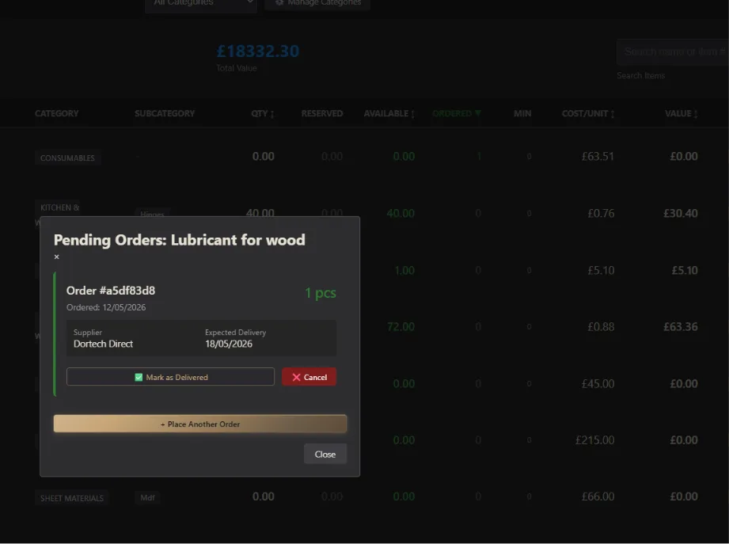
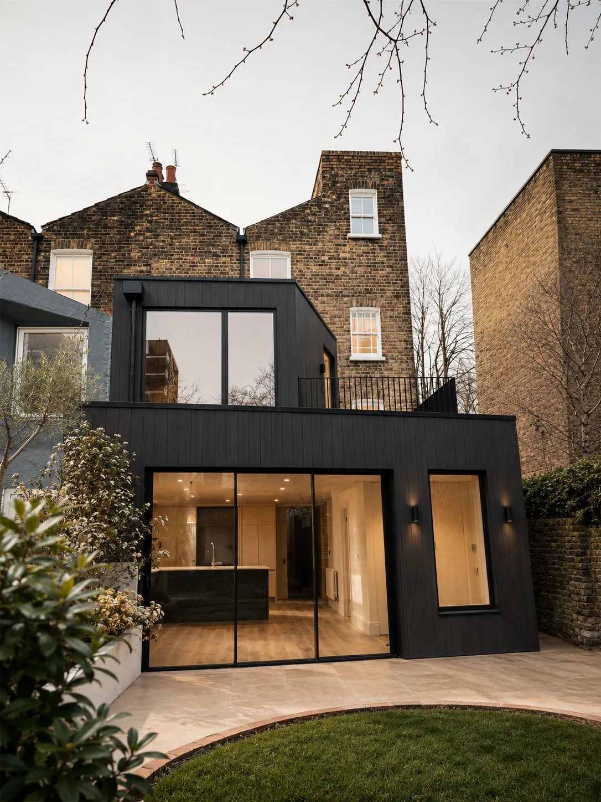

An extension can look flawless in summer. The real test comes when temperatures drop and the heating comes on.At Skylon Construction, we believe the quality of an extension is not only about how it looks on completion day, but how comfortable it remains through the coldest months of the year.
What actually keeps an extension warm?
Good insulation is not simply about putting enough material inside a wall.The important part is continuity.Insulation needs to work around the entire building envelope, through walls, floors and roofs, around windows and doors, and particularly where the new extension meets the existing house.These junctions may look insignificant on a drawing, but they are often where heat loss, draughts and cold spots begin if the detailing is not properly considered during construction.For us, these details are part of the build from the beginning, not something to correct once the plasterboard and finishes are already in place.

The weakest point is often where two things meet
Extensions create dozens of transitions.Old brickwork meets new construction. A roof meets an external wall. A window frame meets an opening. Structural steelwork passes through insulated areas.This is where careful construction makes a difference.At Skylon Construction, we look at how insulation, airtightness, glazing, membranes and the existing structure work together rather than treating each element as a separate package.It is not the part of an extension that usually appears in the final photographs.But when the temperature outside moves towards freezing, it becomes one of the parts you feel most.
A warm room is rarely the result of one product. It is the result of hundreds of details meeting properly.
Built for winter, not just handover day
Large areas of glazing, open-plan layouts and connections to the garden have become defining features of modern extensions.They can create beautiful spaces, but they also make the performance of the building envelope even more important.A well-built extension should remain comfortable without the heating constantly compensating for draughts, cold surfaces or unnecessary heat loss.That is why we think beyond the finished photograph.A project should still feel well built on a dark February morning, months after the builders have left.For us, that is a much better measure of quality.

What this means for you
If you are planning a home extension, ask your contractor about more than the thickness of the insulation.Ask how it continues around windows and doors, what happens where the new structure meets the existing house, and how the roof, walls and floor work together as one building envelope.These details are much easier to get right while the extension is being built than to repair afterwards.At Skylon Construction, we believe a high-quality extension should not only look beautiful.You should be able to feel the difference when the temperature drops.
Back to Journal